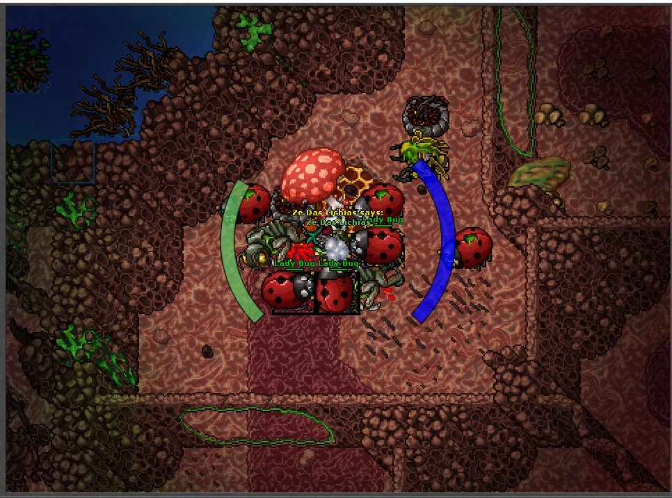
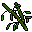
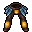

Lady bug
Para pegar a "Lady bug" você precisa do "Four-Leaf Clover", Que é um item de quest que está em inseto, basta teleportar "/ir inseto" e subir os andares para achar o local do cogumelo, onde está a quest lvl 65+.
O item só é dropado uma vez, pelo fato de ser quest, então se não domar... vai ter que pegar o item com outro char, nem preciso dizer que o lady bug se encontra na quest 😊👌.
Uma dica, nesse lugar os insetos maiores dropa "Grasshopper Legs" calça que aumenta a velocidade, e dropa até que de boa.
Home